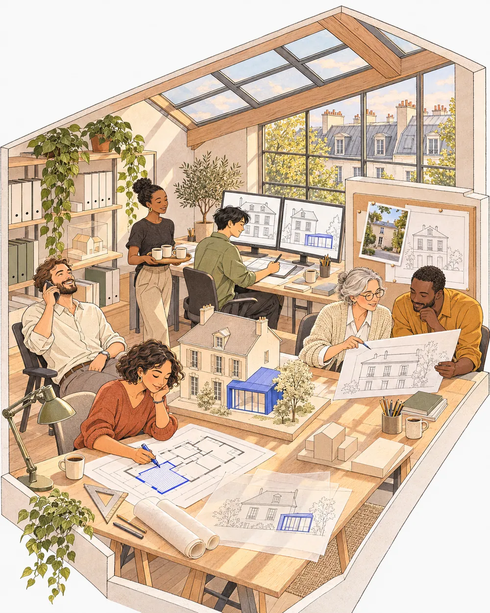
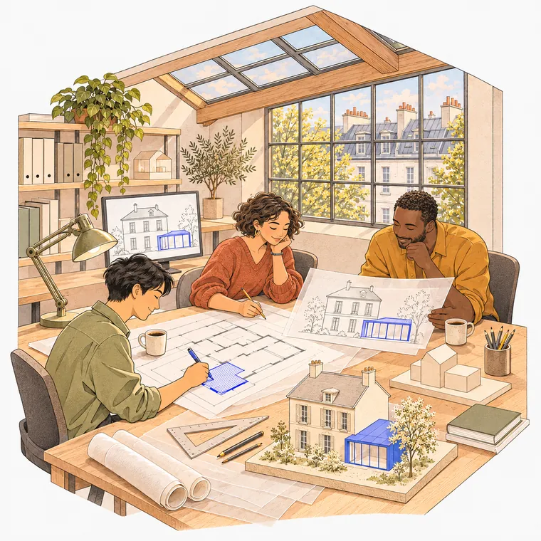

1 · UNE MINUTE
Vous choisissez votre projet
Deux ou trois questions, votre prix, le paiement. Pas de devis à attendre, pas de compte à créer.
Un abri, une piscine, une extension ? Avant de dessiner, on lit le plan local d'urbanisme de votre commune : distances aux voisins, hauteur, emprise, clôtures, couleurs. Puis on prépare votre dossier de mairie, plans compris. Un logiciel ne le fait pas, nous si.
On répond, lun-ven 9 h-18 h01 84 16 65 53Une vraie personne, qui prépare des dossiers. Pas un standard.
Choisissez votre projet : vous verrez les règles qui s'appliquent, le prix, et ce qu'on vous demandera. Puis votre prix exact en deux ou trois questions.
Vous ne savez pas dans quelle case vous êtes ? Appelez-nous : 01 84 16 65 53, on vous le dit en deux minutes.
Le premier motif de refus n'est pas un plan mal dessiné, c'est une règle du plan local d'urbanisme qui n'a pas été respectée. Chaque commune a les siennes, sur des dizaines de pages. On les lit pour vous, avant de dessiner.
Si votre projet ne passe pas tel quel, on vous le dit avant de commencer, avec ce qu'il faudrait changer pour qu'il passe.
Pas besoin de savoir dessiner ni de connaître le jargon. Quelques photos et deux ou trois mesures suffisent.
Deux ou trois questions, votre prix, le paiement. Pas de devis à attendre, pas de compte à créer.

Depuis votre téléphone. Un guide vous dit quoi photographier et quoi mesurer.

On lit le plan local d'urbanisme de votre commune et on adapte le projet s'il le faut. Ensuite seulement, on dessine tous les plans que la mairie demande (situation, masse, façades, coupe, insertion) et on remplit le formulaire. Une deuxième personne relit tout.

En ligne, avec notre guide. Ou on s'en charge pour vous.
Tout compris : règles vérifiées, plans, formulaire et relecture. Prix TTC.

Abri de jardin, piscine, pergola, carport, clôture, portail, fenêtres, fenêtre de toit, lucarne, toiture, façade, panneaux solaires, climatisation, petite démolition.
PRÊT EN 48 H
Extension, véranda, combles (avec ou sans lucarne), surélévation, grange ou local transformé en logement, quand une déclaration suffit.
PRÊT EN 48 H
Une chambre, un bureau ou un salon à la place du garage, nouvelle façade comprise.
PRÊT EN 48 H
Grande extension, surélévation ou transformation avec travaux de façade, quand la mairie exige un permis.
PRÊT EN 5 JOURS
Le permis de construire complet, à partir des plans de votre constructeur ou des vôtres, jusqu'à 150 m². Attestation énergétique du constructeur non comprise.
PRÊT EN 5 JOURSUn cas particulier, un doute sur le prix ? 01 84 16 65 53, du lundi au vendredi.
Les générateurs automatiques dessinent un plan propre. Mais ils vous laissent vérifier vous-même les règles de votre commune, et c'est là que les dossiers sont refusés.
| Outil automatique | Bureau d'études classique | Le Bon Permis | |
|---|---|---|---|
| Règles de votre commune (PLU) | À vérifier vous-même | Vérifiées | Lues et vérifiées avant de dessiner |
| Si votre projet ne respecte pas une règle | Vous l'apprenez par le refus de la mairie | On vous prévient | On vous le dit avant de commencer, avec ce qui passerait |
| Qui dessine les plans ? | Vous, avec un logiciel | Un dessinateur | Nous, d'après vos photos |
| Extension, véranda, façade : l'existant dessiné | Sur devis, ou pas du tout | Oui | Oui, compris |
| Relu par une deuxième personne | Non | Parfois | Toujours |
| Prix d'une déclaration de travaux | 39 à 89 € | 190 à 590 € | 149 € |
| Dossier prêt en | Quelques minutes | 5 à 15 jours | 48 h |
| Si la mairie refuse à cause d'une erreur dans le dossier | Vous recommencez | Ça dépend | On corrige et on redépose, gratuitement |
Une petite équipe d'urbanistes et de dessinateurs. Chaque dossier passe entre deux paires de mains avant de vous être envoyé.
« Une question ? Vous parlez à la personne qui prépare votre dossier. Pas à un robot. »
01 84 16 65 53Du lundi au vendredi, 9 h à 18 h. Appel non surtaxé.Un refus ou une pièce manquante à cause d'une erreur dans le dossier ? On corrige et on redépose, sans rien vous facturer. Si la mairie ou l'architecte des Bâtiments de France demande autre chose sans que le dossier soit en cause, on s'en occupe aussi, au tarif affiché : 69 € pour compléter le dossier, 149 € pour redessiner et redéposer.
Une reprise par dossier, dans les 6 mois qui suivent la décision. Ne sont pas couverts : un projet modifié après la commande, des photos ou des mesures inexactes, et un refus portant sur le projet lui-même alors qu'on vous avait prévenu avant le dépôt. C'est toujours la mairie qui décide en dernier.Le plan local d'urbanisme de votre commune, zone par zone : les distances à respecter par rapport à la rue et aux voisins, la hauteur maximale, l'emprise au sol, les règles sur les clôtures, les toitures et les couleurs, le stationnement. On le lit avant de dessiner. Si votre projet ne passe pas, on vous le dit tout de suite et on vous propose ce qui passerait. Un générateur de plans automatique ne fait pas cette vérification : il vous la laisse.
Vous n'avez pas à le savoir, c'est notre travail. En général, une déclaration suffit jusqu'à 20 m² créés, ou 40 m² pour une extension en ville. Au-delà, il faut un permis.
Pour les petits travaux, vous choisissez le modèle, on le place et on vérifie qu'il est autorisé. Pour un agrandissement, un croquis ou une description suffit. Si vous n'avez qu'une idée, l'option conception (690 €) vous apporte deux propositions, les plans intérieurs et une vue 3D.
Non. On les déclare après coup, au même prix, à partir de photos de ce qui existe. Avant une vente, voyez régulariser avant une vente.
Un mois pour une déclaration, deux mois pour un permis de maison, un mois de plus près d'un monument historique. À compter du dépôt du dossier complet.
Si c'est à cause d'une erreur ou d'un oubli de notre part, on corrige et on redépose gratuitement. Si la demande vient d'ailleurs (un détail que la mairie veut voir, une prescription de l'architecte des Bâtiments de France, un projet que vous changez), on la traite pour 69 € quand il suffit de compléter le dossier, ou 149 € quand il faut redessiner et redéposer. On vous le dit avant, vous décidez.
Seulement si votre maison dépasse 150 m² après les travaux. Dans ce cas, on vous met en relation avec un architecte partenaire.
Oui. Vous payez par carte, Apple Pay, Google Pay ou PayPal, sur une page sécurisée. Vos données bancaires ne passent jamais par nous.
Par téléphone au 01 84 16 65 53, du lundi au vendredi, ou par e-mail à contact@bonpermis.fr. Une fois votre dossier commandé, vous nous écrivez aussi directement depuis votre espace, et on vous répond au même endroit.
Le Bon Permis est un service de LK Invest, société installée à Paris. On prépare des dossiers de mairie pour les particuliers, partout en France. Entreprise privée, sans lien avec les administrations.
Choisissez votre projet : en une minute, vous saurez ce qu'il vous faut et ce que ça coûte.
Voir mon prix en une minute